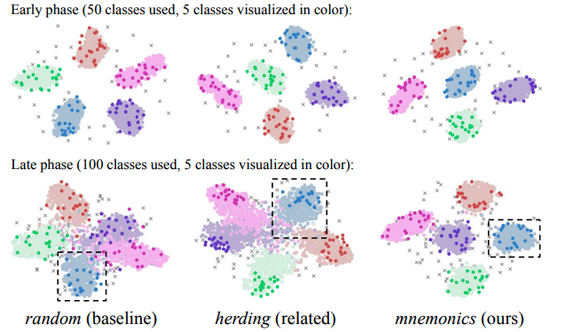

Qaiser Abbas
About Me
I am a Sr. Machine Learning Engineer at Oscar AI, where I currently work on machine learning, data science, and NLP application development to solve complex business problems. Before joining Oscar I worked at Octopus Digital, SDSol Technologies, and UET Lahore with ML, Generative AI, NLP, Time Series Forecasting and Speech Recognition in healthcare, education and oil & gas sector.
I am broadly interested in learning from limited data for visual recognition problems. My primary area of interests include transfer learning and self supervised learning with applications to Medical Image Computing, Agriculture, and Vision based Industrial Defects Detection. I believe that artifical vision and learning from limited data can help us in improved object recognition, detection and segmentation to solve real-world vision problems.Research Interests
- Computer Vision: image recognition, image generation, video captioning
- Deep Learning: meta-learning, incremental learning, transfer learning
- Medical Image Analysis: meta-learning, incremental learning, transfer learning
- Natural Language Processing: meta-learning, incremental learning, transfer learning
- Medical Foundation Models: meta-learning, incremental learning, transfer learning
News
- [26 Sep. 2026] Beyond Accuracy accepted in IJRS.
- [10 Aug. 2026] Our paper about architectural complexity for histopathology analyis accepted in JIIM.
- [01 Aug. 2026] FaceAge+ accepted in Scientfic Reports.
- [28 Jul. 2026] Cross-organ transfer learning for TME classification accepted in Scientific Reports.
- [25 Nov. 2025] Preprint about Multimodal Learning under Imperfect Data Conditions is now available.
- [20 Aug. 2025] I started my PhD in CSE @ HBKU.
- [26 May. 2025] Adversarial Attacks on anomaly detection accepted into Internet of Things.
- [11 Nov. 2024] I have joined Oscar AI as a Sr. AI Engineer.
- [26 Aug. 2024] I have joined Octopus Digital as a Sr. Machine Learning Engineer.
- [07 Aug. 2023] Network Intrusion Detection accetped in PeerJ Computer Science.
- [22 Apr. 2023] Punjabi NER Paper accepted in ACM TALLIP.
- [07 Nov. 2022] I have joined SDSol Technologies as a Machine Learning Engineer.
- [10 Oct. 2022] 2nd paper from my MS thesis published in SN Computer Science.
- [22 Mar. 2022] A research proposal that I wrote for “Tea Plant Disease Prediction using Remote Sensing and Machine Learning” got funding of PKR 3.5M by NRPU .
- [07 Oct. 2021] 1st paper from my MS thesis accepted in Visual Computing for Industry, Biomedicine and Art.
- [01 Sep. 2021] I joined WortelAI as a part time Software Engineer (Deep Learning and Computer Vision).
- [01 Mar. 2021] I joined Department of Computer Science as a Teaching Fellow @ UET Lahore.
Publications
-
 MICCAI
International Conference on Medical Image Computing and Computer-Assisted Intervention (MICCAI), 2023.
MICCAI
International Conference on Medical Image Computing and Computer-Assisted Intervention (MICCAI), 2023. -

CVPRIEEE/CVF Conference on Computer Vision and Pattern Recognition (CVPR), 2020.
Services
Conference Reviewers
Journal Reviewers
Visual Computing for Industry, Biomedicine, and Art Computerized Medical Imaging and Graphics Biomedical Signal Processing and Control ACM Transactions on Asian Language Information Processing SN Computer Science